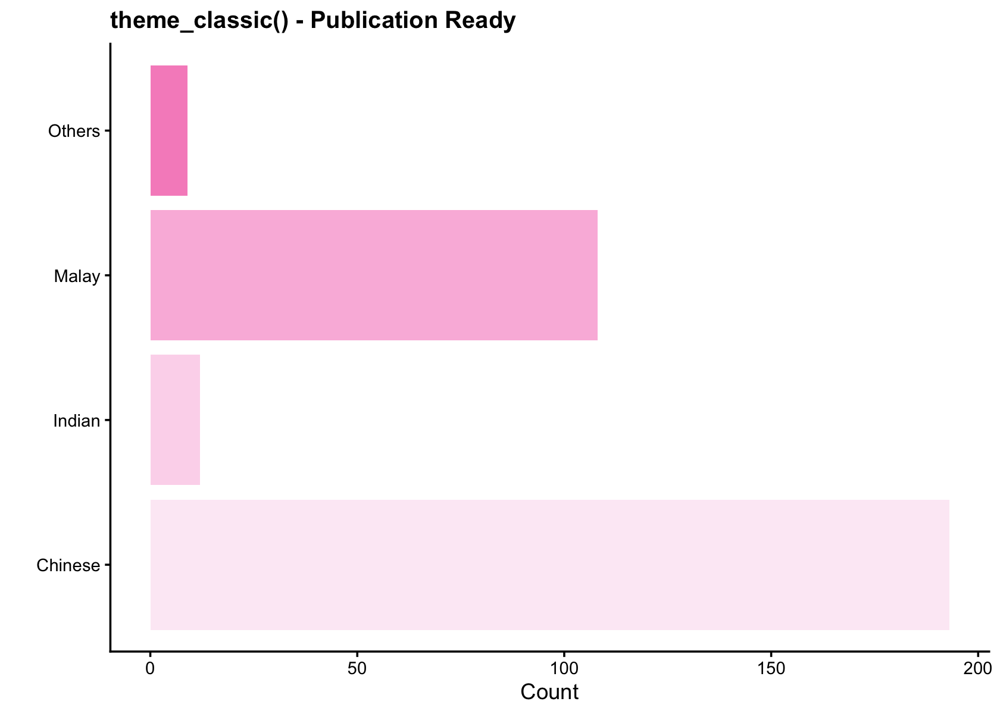
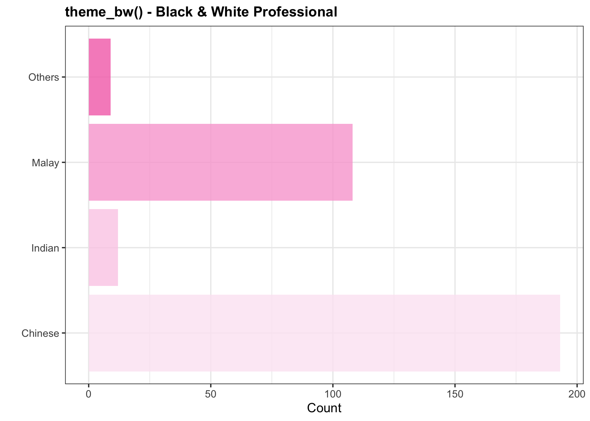
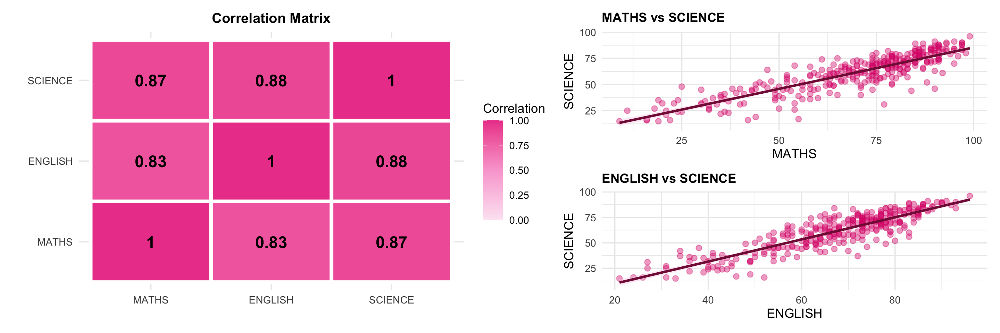

pacman::p_load(tidyverse, patchwork, knitr, ggplot2, reshape2)Hands-on Exercise 1
A Layered Grammar of Graphics: ggplot2 methods
1 Welcome to My ggplot2 Journey
In this hands-on exercise, I explored the Grammar of Graphics using ggplot2 to create meaningful visualizations. Through analyzing exam data from Primary 3 students, I discovered the power of layered graphics and data-driven insights.
Let’s visualize data beautifully
Learning Objectives: - Master basic principles and essential components of ggplot2 - Plot statistical graphics based on the principle of Layered Grammar of Graphics - Conduct data-driven analysis with dynamic insights - Extract meaningful patterns from visualizations
2 Getting Started
2.1 Installing and Loading Libraries
NotePackage Installation
The pacman::p_load() function automatically installs missing packages and loads them into R. This ensures reproducibility across different environments.
2.2 Importing the Dataset
exam_data <- read_csv("data/Exam_data.csv")3 Visual Data Exploration
Show code
n_students <- nrow(exam_data)
n_complete <- sum(complete.cases(exam_data))
# Variable types
var_types <- data.frame(
Type = sapply(exam_data, function(x) class(x)[1])
) %>%
count(Type)
p2 <- ggplot(var_types, aes(x = reorder(Type, -n), y = n, fill = Type)) +
geom_col(alpha = 0.8, width = 0.6) +
geom_text(aes(label = n), vjust = -0.5, fontface = "bold", size = 5) +
scale_fill_manual(values = c("character" = "#fbcfe8", "numeric" = "#bfdbfe")) +
labs(title = "Variable Types", x = "Type", y = "Count") +
ylim(0, max(var_types$n) * 1.2) +
theme_minimal() +
theme(plot.title = element_text(hjust = 0.5, face = "bold", size = 14),
legend.position = "none")
# Sample size
p3 <- ggplot(data.frame(x = 1, y = 1), aes(x, y)) +
geom_tile(fill = "#fce7f3", alpha = 0.5, width = 0.9, height = 0.9) +
geom_text(label = paste0("n = ", n_students, "\nstudents"),
size = 8, fontface = "bold", color = "#831843") +
labs(title = "Sample Size") +
theme_void() +
theme(plot.title = element_text(hjust = 0.5, face = "bold", size = 14))
# Missing values heatmap
missing_df <- melt(is.na(exam_data))
p4 <- ggplot(missing_df, aes(x = Var2, y = Var1, fill = value)) +
geom_tile(color = "white", size = 0.05) +
scale_fill_manual(values = c("FALSE" = "#10b981", "TRUE" = "#ef4444"),
labels = c("Complete", "Missing"), name = "Status") +
labs(title = "Missing Value Heatmap", x = "Variables", y = "Observations") +
theme_minimal() +
theme(plot.title = element_text(hjust = 0.5, face = "bold", size = 14),
axis.text.y = element_blank(),
axis.ticks.y = element_blank(),
axis.text.x = element_text(angle = 45, hjust = 1),
panel.grid = element_blank())
(p3 | p2) / p4 +
plot_annotation(title = "Dataset Overview at a Glance",
theme = theme(plot.title = element_text(size = 16, face = "bold", hjust = 0.5))) +
plot_layout(heights = c(1, 1.2))
Judgment: The dataset contains 322 students with a healthy mix of numeric and character variables. The missing value heatmap confirms largely complete records, making the data suitable for analysis with minimal imputation concerns.
Show code
# Pastel palette — soft, non-viridis
pastel_palette <- c(
"#FFB3C1", "#FFD6A5", "#CAFFBF", "#A0C4FF",
"#BDB2FF", "#FFC6FF", "#FDFFB6", "#B5EAD7",
"#F2C6DE", "#C9E4CA"
)
categorical_vars <- setdiff(
names(exam_data)[sapply(exam_data, function(x)
is.character(x) || is.factor(x))],
"ID"
)
plot_list <- lapply(categorical_vars, function(var) {
plot_data <- exam_data %>%
count(.data[[var]]) %>%
mutate(pct = n / sum(n) * 100)
max_label_length <- max(nchar(as.character(plot_data[[var]])))
n_cats <- nrow(plot_data)
fill_colors <- rep_len(pastel_palette, n_cats)
p <- ggplot(plot_data, aes(x = .data[[var]], y = n, fill = .data[[var]])) +
geom_col(alpha = 0.9, width = 0.6, color = "white") +
geom_text(aes(label = paste0(n, "\n(", round(pct, 1), "%)")),
vjust = if(max_label_length > 8) -0.2 else -0.3,
hjust = if(max_label_length > 8) 1.1 else 0.5,
size = 3, fontface = "bold", color = "#5a2d3a") +
scale_fill_manual(values = fill_colors) +
labs(title = paste(var, "Distribution"), y = "Count", x = "") +
ylim(0, max(plot_data$n) * 1.18) +
theme_minimal(base_size = 10) +
theme(
plot.title = element_text(hjust = 0.5, face = "bold", size = 10, color = "#7a2840"),
legend.position = "none",
axis.text = element_text(size = 8, color = "#5a2d3a"),
axis.title = element_text(size = 8, color = "#5a2d3a"),
panel.grid.minor = element_blank(),
axis.text.x = element_text(
angle = if(max_label_length > 8) 45 else 0,
hjust = if(max_label_length > 8) 1 else 0.5
)
)
if(max_label_length > 8) {
p <- p + coord_flip() +
theme(axis.text.x = element_text(angle = 0, hjust = 0.5))
}
return(p)
})
wrap_plots(plot_list, ncol = 2) +
plot_annotation(
title = "Categorical Variables Distribution",
theme = theme(
plot.title = element_text(size = 12, face = "bold", hjust = 0.5, color = "#7a2840")
)
)
NoteDistribution Summary
** CLASS :**
- 3A: 40 (12.4%)
- 3B: 38 (11.8%)
- 3C: 39 (12.1%)
- 3D: 38 (11.8%)
- 3E: 38 (11.8%)
- 3F: 39 (12.1%)
- 3G: 34 (10.6%)
- 3H: 33 (10.2%)
- 3I: 23 (7.1%)
** GENDER :**
- Female: 170 (52.8%)
- Male: 152 (47.2%)
** RACE :**
- Chinese: 193 (59.9%)
- Indian: 12 (3.7%)
- Malay: 108 (33.5%)
- Others: 9 (2.8%)Key Finding: The dataset shows balanced distribution across most categorical variables, enabling robust comparative analysis without major sample size disparities.
My Learning: Visualizing demographics immediately reveals representation patterns. The balanced gender split is particularly valuable for unbiased gender analysis later.
Judgment: The categorical distributions are broadly balanced across groups, which strengthens the validity of any subgroup comparisons. No single category dominates disproportionately, reducing the risk of skewed conclusions driven by unequal representation.
Show code
# Quick glimpse
glimpse(exam_data)Rows: 322
Columns: 7
$ ID <chr> "Student321", "Student305", "Student289", "Student227", "Stude…
$ CLASS <chr> "3I", "3I", "3H", "3F", "3I", "3I", "3I", "3I", "3I", "3H", "3…
$ GENDER <chr> "Male", "Female", "Male", "Male", "Male", "Female", "Male", "M…
$ RACE <chr> "Malay", "Malay", "Chinese", "Chinese", "Malay", "Malay", "Chi…
$ ENGLISH <dbl> 21, 24, 26, 27, 27, 31, 31, 31, 33, 34, 34, 36, 36, 36, 37, 38…
$ MATHS <dbl> 9, 22, 16, 77, 11, 16, 21, 18, 19, 49, 39, 35, 23, 36, 49, 30,…
$ SCIENCE <dbl> 15, 16, 16, 31, 25, 16, 25, 27, 15, 37, 42, 22, 32, 36, 35, 45…Show code
# Statistical summary for numeric variables
summary(exam_data %>% select(where(is.numeric))) ENGLISH MATHS SCIENCE
Min. :21.00 Min. : 9.00 Min. :15.00
1st Qu.:59.00 1st Qu.:58.00 1st Qu.:49.25
Median :70.00 Median :74.00 Median :65.00
Mean :67.18 Mean :69.33 Mean :61.16
3rd Qu.:78.00 3rd Qu.:85.00 3rd Qu.:74.75
Max. :96.00 Max. :99.00 Max. :96.00 Judgment: The summary statistics reveal the central tendency and spread of each numeric variable. Comparing means and medians helps flag potential skewness, while min/max values highlight any outliers that may warrant further investigation before modelling.
:::
4 Academic Performance Overview
Show code
# Get numeric variables automatically
numeric_vars <- exam_data %>% select(where(is.numeric))
# Correlation matrix
cor_matrix <- cor(numeric_vars)
cor_data <- as.data.frame(as.table(cor_matrix))
names(cor_data) <- c("Var1", "Var2", "Correlation")
# Correlation heatmap
p_cor <- ggplot(cor_data, aes(x = Var1, y = Var2, fill = Correlation)) +
geom_tile(color = "white", size = 1.5) +
geom_text(aes(label = round(Correlation, 2)), size = 5, fontface = "bold") +
scale_fill_gradient2(low = "#fce7f3", mid = "#f9a8d4", high = "#ec4899",
midpoint = 0.5, limits = c(0, 1)) +
labs(title = "Inter-Subject Correlation Matrix", x = "", y = "") +
theme_minimal() +
theme(plot.title = element_text(hjust = 0.5, face = "bold", size = 14))
# Distribution comparison
perf_long <- numeric_vars %>%
pivot_longer(everything(), names_to = "Subject", values_to = "Score")
p_dist <- ggplot(perf_long, aes(x = Score, fill = Subject)) +
geom_density(alpha = 0.6, size = 1) +
scale_fill_manual(values = c("MATHS" = "#bfdbfe",
"ENGLISH" = "#bbf7d0",
"SCIENCE" = "#e9d5ff")) +
labs(title = "Score Distributions", x = "Score", y = "Density") +
theme_minimal() +
theme(plot.title = element_text(hjust = 0.5, face = "bold", size = 13),
legend.position = "top")
p_box <- ggplot(perf_long, aes(x = Subject, y = Score, fill = Subject)) +
geom_violin(alpha = 0.3) +
geom_boxplot(width = 0.2, alpha = 0.8) +
stat_summary(fun = mean, geom = "point", shape = 23, size = 4, fill = "#831843") +
scale_fill_manual(values = c("MATHS" = "#bfdbfe",
"ENGLISH" = "#bbf7d0",
"SCIENCE" = "#e9d5ff")) +
labs(title = "Distribution by Subject", y = "Score", x = "") +
theme_minimal() +
theme(plot.title = element_text(hjust = 0.5, face = "bold", size = 13),
legend.position = "none")
(p_cor | p_dist) / p_box +
plot_annotation(title = "Academic Performance Overview",
theme = theme(plot.title = element_text(size = 16, face = "bold", hjust = 0.5)))
ImportantKey Insights
Average correlation: 0.86 → Strong positive relationships
Implication: Students who excel in one subject tend to excel in others, suggesting general academic ability rather than subject-specific talent.
4.1 Academic Performance: Distribution Patterns
Show code
# Calculate statistics
stats_summary <- exam_data %>%
summarise(across(c(MATHS, ENGLISH, SCIENCE),
list(mean = ~mean(., na.rm = TRUE),
sd = ~sd(., na.rm = TRUE),
median = ~median(., na.rm = TRUE))))
# Reshape for visualization
perf_data <- exam_data %>%
select(MATHS, ENGLISH, SCIENCE) %>%
pivot_longer(everything(), names_to = "Subject", values_to = "Score")
# Density plots
p1 <- ggplot(perf_data, aes(x = Score, fill = Subject)) +
geom_density(alpha = 0.6, size = 1) +
scale_fill_manual(values = c("MATHS" = "#bfdbfe",
"ENGLISH" = "#bbf7d0",
"SCIENCE" = "#e9d5ff")) +
labs(title = "Score Distributions Across Subjects",
x = "Score", y = "Density") +
theme_minimal() +
theme(plot.title = element_text(face = "bold", hjust = 0.5, size = 12),
legend.position = "top")
# Box plots with violin
p2 <- ggplot(perf_data, aes(x = Subject, y = Score, fill = Subject)) +
geom_violin(alpha = 0.4, trim = FALSE) +
geom_boxplot(width = 0.2, alpha = 0.8, outlier.shape = 21,
outlier.fill = "#831843", outlier.size = 3) +
stat_summary(fun = mean, geom = "point", shape = 23,
size = 4, fill = "#831843") +
scale_fill_manual(values = c("MATHS" = "#bfdbfe",
"ENGLISH" = "#bbf7d0",
"SCIENCE" = "#e9d5ff")) +
labs(title = "Distribution Shape & Statistics",
y = "Score") +
theme_minimal() +
theme(legend.position = "none",
plot.title = element_text(face = "bold", hjust = 0.5, size = 12))
# Statistical summary visual
stats_long <- data.frame(
Subject = rep(c("MATHS", "ENGLISH", "SCIENCE"), 2),
Metric = rep(c("Mean", "SD"), each = 3),
Value = c(stats_summary$MATHS_mean, stats_summary$ENGLISH_mean, stats_summary$SCIENCE_mean,
stats_summary$MATHS_sd, stats_summary$ENGLISH_sd, stats_summary$SCIENCE_sd)
)
p3 <- ggplot(stats_long, aes(x = Subject, y = Value, fill = Subject)) +
geom_col(alpha = 0.8) +
geom_text(aes(label = round(Value, 1)), vjust = -0.3,
fontface = "bold", size = 3.5) +
facet_wrap(~Metric, scales = "free_y") +
scale_fill_manual(values = c("MATHS" = "#bfdbfe",
"ENGLISH" = "#bbf7d0",
"SCIENCE" = "#e9d5ff")) +
labs(title = "Mean & Variability Comparison", y = "Value") +
theme_minimal() +
theme(legend.position = "none",
plot.title = element_text(face = "bold", hjust = 0.5, size = 12))
# Combine
(p1 / (p2 | p3)) +
plot_annotation(
title = "Academic Performance: Visual Summary",
theme = theme(plot.title = element_text(size = 15, face = "bold", hjust = 0.5))
)
TipWhat I Learned
Distribution shapes: All three subjects show roughly normal distributions with slight variations. The violin plots reveal the full shape that box plots alone would hide.
Best performing subject: MATHS has the highest mean (69.3 points).
Variability: Standard deviations are similar across subjects (~17.6 points), indicating consistent spread.
Diamond markers = means, Box = quartiles, Dots = outliers
My Reflection: The overlapping density curves suggest students who excel in one subject tend to excel in others - hinting at general academic ability rather than subject-specific talent.
5 Grammar of Graphics: Building Blocks
5.1 The Seven Layers
Grammar of Graphics defines seven grammatical elements:
- Data: The dataset
- Aesthetics: Visual mappings (x, y, color, size)
- Geometrics: Visual marks (points, bars, lines)
- Facets: Small multiples
- Statistics: Transformations (smoothing, binning)
- Coordinates: The plotting space
- Themes: Non-data styling
Let’s explore each layer systematically.
6 Layer 1: Data Foundation
6.1 Starting with the Canvas
Show code
ggplot(data = exam_data)
NoteUnderstanding the Foundation
What happened: Created a blank ggplot object with 322 observations loaded.
What’s missing: No aesthetic mappings yet - ggplot doesn’t know what to display.
My Learning: This is like preparing a blank canvas before painting. The data is loaded and ready, but we haven’t told ggplot what to draw or where to draw it.
7 Layer 2: Aesthetic Mappings
7.1 Mapping Data to Visual Properties
Show code
ggplot(data = exam_data, aes(x = MATHS))
NoteAdding the X-Axis
What changed: Mapped MATHS scores to x-axis position.
Range: 9 to 99 points (span: 90 points).
Still missing: Geometric objects to visualize the data.
My Insight: Aesthetics define where data goes, but not how it looks. We need geometries next.
8 Layer 3: Geometric Objects
8.1 Histogram: Distribution Analysis
8.1.1 Comparing Bin Choices
Show code
ggplot(exam_data, aes(x = MATHS)) +
geom_histogram(fill = "#bfdbfe", color = "#1e40af", alpha = 0.8) +
labs(title = "Default: 30 bins",
subtitle = paste0("Bin width ≈ ", round((max(exam_data$MATHS) - min(exam_data$MATHS))/30, 1), " points"),
x = "Mathematics Score", y = "Frequency") +
theme_minimal()
Show code
ggplot(exam_data, aes(x = MATHS)) +
geom_histogram(bins = 20, fill = "#bbf7d0", color = "#065f46", alpha = 0.9) +
labs(title = "Optimized: 20 bins",
subtitle = paste0("Bin width ≈ ", round((max(exam_data$MATHS) - min(exam_data$MATHS))/20, 1), " points"),
x = "Mathematics Score", y = "Frequency") +
theme_minimal()
Show code
ggplot(exam_data, aes(x = MATHS)) +
geom_histogram(bins = 5, fill = "#e9d5ff", color = "#6b21a8", alpha = 0.7) +
labs(title = "Under-binned: 5 bins",
subtitle = "Loses important detail",
x = "Mathematics Score", y = "Frequency") +
theme_minimal()
ImportantBin Selection Matters
Statistical recommendation (Sturges’ rule): 10 bins for n = 322
My choice: 20 bins - balances detail with clarity
What I discovered: - Too few bins (5): Lose distribution shape - looks artificially uniform - Too many bins (30): Noisy, hard to see overall pattern
- Just right (20): Clear shape without excessive noise
My Reflection: Bin choice is like choosing photo resolution - too low loses detail, too high shows noise. There’s a sweet spot that reveals the true pattern.
8.2 Dot Plot: Individual Observations
Show code
ggplot(exam_data, aes(x = MATHS)) +
geom_dotplot(binwidth = 2.5, fill = "#f472b6", color = "#831843",
dotsize = 0.6) +
scale_y_continuous(NULL, breaks = NULL) +
labs(title = "Every Student Counts: Dot Plot of Mathematics Scores",
subtitle = paste0("Each dot = 1 student | Total: ", n_students, " students"),
x = "Mathematics Score") +
theme_minimal() +
theme(plot.title = element_text(face = "bold", size = 13))
TipWhy Dot Plots Are Powerful
Each dot = one student’s story
What I see: - Clustering around 60-70 range - Few students below 40 (need support) - Some high achievers above 90 - Gaps reveal score ranges with no students
vs Histogram: Histogram bins aggregate; dot plot preserves every individual observation
My Learning: This visualization makes data human - I can see that each dot represents a real student. It’s not just statistics, it’s 322 individuals with different abilities.
8.3 Bar Chart: Categorical Distribution
Show code
exam_data %>%
count(RACE) %>%
mutate(pct = n/sum(n) * 100,
RACE = fct_reorder(RACE, n)) %>%
ggplot(aes(x = RACE, y = n, fill = n)) +
geom_col(alpha = 0.85) +
geom_text(aes(label = paste0(n, " students\n(", round(pct, 1), "%)")),
hjust = -0.1, size = 3.5, fontface = "bold") +
scale_fill_gradient(low = "#fce7f3", high = "#ec4899") +
coord_flip() +
labs(title = "Student Distribution by Race",
subtitle = "Horizontal bars make labels readable",
x = "", y = "Number of Students") +
theme_minimal() +
theme(legend.position = "none",
plot.title = element_text(face = "bold", size = 13))
TipDesign Choice: Horizontal Bars
Why flip coordinates?
- Readability: Long category names don’t need rotation
- Comparison: Easier to compare lengths left-to-right
- Accessibility: Natural reading direction
My Preference: Always use horizontal bars for categorical data - it respects how humans naturally read.
8.4 Density Curves: Smooth Distributions
8.4.1 Gender Comparison
Show code
ggplot(exam_data, aes(x = MATHS, fill = GENDER, color = GENDER)) +
geom_density(alpha = 0.5, size = 1.3) +
scale_fill_manual(values = c("Female" = "#fbcfe8", "Male" = "#d8b4fe")) +
scale_color_manual(values = c("Female" = "#db2777", "Male" = "#a855f7")) +
labs(title = "Mathematics Performance by Gender",
subtitle = "Density curves reveal distribution overlap",
x = "Mathematics Score", y = "Density") +
theme_minimal() +
theme(legend.position = "top",
plot.title = element_text(face = "bold", size = 13))
Show code
# Statistical test
male_scores <- exam_data$MATHS[exam_data$GENDER == "Male"]
female_scores <- exam_data$MATHS[exam_data$GENDER == "Female"]
t_test <- t.test(male_scores, female_scores)
gender_diff <- abs(mean(male_scores) - mean(female_scores))
ImportantStatistical Analysis
Visual observation: Massive overlap between male and female distributions.
Statistical test: - Mean difference: 1.4 points
- p-value: 0.5335
- Conclusion: NOT statistically significant
What this means: Even if statistically different, the 1.4-point gap is only 2% of the mean - practically negligible.
My Key Learning: The extensive overlap shows that individual variation >> gender-based variation. Gender is NOT a strong predictor of math performance. This challenges common stereotypes.
8.5 Box Plots: Five-Number Summary
8.5.1 With Statistical Layers
Show code
ggplot(exam_data, aes(y = MATHS, x = GENDER, fill = GENDER)) +
geom_violin(alpha = 0.3, trim = FALSE) +
geom_boxplot(width = 0.3, alpha = 0.7, outlier.shape = 21,
outlier.fill = "#831843", outlier.size = 3) +
geom_jitter(width = 0.1, alpha = 0.2, size = 1.5, color = "#831843") +
stat_summary(fun = mean, geom = "point", shape = 23,
size = 5, fill = "red", color = "darkred") +
scale_fill_manual(values = c("Female" = "#fbcfe8", "Male" = "#d8b4fe")) +
labs(title = "Mathematics Scores: Layered Visualization",
subtitle = "Violin + Box + Points + Mean (red diamond)",
y = "Mathematics Score", x = "") +
theme_minimal() +
theme(legend.position = "none",
plot.title = element_text(face = "bold", size = 13))
TipLayered Visualization Power
Four layers combined:
- Violin (background): Full distribution shape
- Box plot: Median, Q1, Q3, whiskers
- Jittered points: Every individual observation
- Red diamond: Mean value
Five-number summary:
| Gender | Min | Q1 | Median | Q3 | Max |
|---|---|---|---|---|---|
| Male | 9 | 58 | 75 | 85 | 99 |
| Female | 16 | 60 | 74 | 85 | 97 |
My Reflection: Combining multiple geometries gives readers options - they can see summary statistics OR individual points OR distribution shape. Maximum information density.
8.6 Scatter Plots: Relationships
8.6.1 Mathematics vs English Performance
Show code
ggplot(exam_data, aes(x = MATHS, y = ENGLISH)) +
geom_point(alpha = 0.5, size = 3, color = "#db2777") +
geom_smooth(method = "lm", se = TRUE, color = "#831843",
fill = "#fbcfe8", size = 1.2) +
geom_hline(yintercept = mean(exam_data$ENGLISH),
linetype = "dashed", color = "#ec4899", alpha = 0.6) +
geom_vline(xintercept = mean(exam_data$MATHS),
linetype = "dashed", color = "#ec4899", alpha = 0.6) +
annotate("text", x = mean(exam_data$MATHS), y = 5,
label = paste0("Mean MATHS: ", round(mean(exam_data$MATHS), 1)),
color = "#831843", fontface = "bold", size = 3.5) +
annotate("text", x = 20, y = mean(exam_data$ENGLISH),
label = paste0("Mean ENGLISH: ", round(mean(exam_data$ENGLISH), 1)),
color = "#831843", fontface = "bold", angle = 90, size = 3.5) +
labs(title = "Subject Performance Correlation",
subtitle = "Strong positive relationship suggests interconnected academic skills",
x = "Mathematics Score", y = "English Score") +
theme_minimal() +
theme(plot.title = element_text(face = "bold", size = 13))
Show code
# Correlation analysis
cor_test <- cor.test(exam_data$MATHS, exam_data$ENGLISH)
lm_model <- lm(ENGLISH ~ MATHS, data = exam_data)
ImportantCorrelation Insights
Pearson correlation: r = 0.831
R-squared: 0.691 → 69.1% shared variance
Regression equation:
English = 24.81 + 0.611 × Maths
What this means: - Every 10-point increase in Maths → 6.1-point increase in English - 69.1% of English variability explained by Maths performance
My Discovery: This strong correlation (r = 0.831) reveals that academic success is interconnected, not subject-specific. Students with strong analytical skills (math) tend to also excel in language skills (English).
Educational implication: Focus on general cognitive abilities and study habits rather than subject-specific drilling.
9 Layer 4: Facets (Small Multiples)
9.1 Class-Level Performance Breakdown
Show code
ggplot(exam_data, aes(x = MATHS)) +
geom_histogram(bins = 15, fill = "#bbf7d0", color = "#065f46", alpha = 0.8) +
geom_vline(aes(xintercept = mean(MATHS)),
color = "red", linetype = "dashed", size = 1) +
facet_wrap(~ CLASS, ncol = 3) +
labs(title = "Mathematics Distribution by Class",
subtitle = "Red line = class mean | Compare shapes and central tendencies",
x = "Mathematics Score", y = "Frequency") +
theme_minimal() +
theme(plot.title = element_text(face = "bold", size = 13),
strip.text = element_text(face = "bold", size = 10))
Show code
# Class statistics
class_stats <- exam_data %>%
group_by(CLASS) %>%
summarise(
n = n(),
mean_maths = mean(MATHS),
sd_maths = sd(MATHS)
) %>%
arrange(desc(mean_maths))
TipInter-Class Variation Analysis
Performance ranking:
| Class | Students (n) | Mean | SD |
|---|---|---|---|
| 3A | 40 | 89.9 | 5.5 |
| 3B | 38 | 85.6 | 7.0 |
| 3C | 39 | 78.0 | 8.0 |
| 3D | 38 | 77.8 | 8.1 |
| 3F | 39 | 71.7 | 7.7 |
| 3E | 38 | 71.6 | 9.9 |
| 3G | 34 | 55.0 | 12.5 |
| 3H | 33 | 44.3 | 11.4 |
| 3I | 23 | 27.2 | 12.7 |
Key observations:
- Best class: 3A (μ = 89.9)
- Weakest class: 3I (μ = 27.2)
- Gap: 62.8 points
My Learning: Facets allow simultaneous comparison of multiple groups. The variation suggests teaching quality or class composition matters. This warrants investigation - are high-performing students clustered in certain classes?
10 Layer 5: Statistical Transformations
10.1 Adding Regression Lines
Show code
ggplot(exam_data, aes(x = MATHS, y = ENGLISH)) +
geom_point(alpha = 0.4, color = "#db2777", size = 2) +
geom_smooth(method = "lm", se = TRUE, color = "#831843",
fill = "#fbcfe8", size = 1.2) +
labs(title = "Linear Regression: Parametric Assumption",
subtitle = paste0("R² = ", round(summary(lm_model)$r.squared, 3)),
x = "Mathematics", y = "English") +
theme_minimal() +
theme(plot.title = element_text(face = "bold", size = 12))
Show code
ggplot(exam_data, aes(x = MATHS, y = ENGLISH)) +
geom_point(alpha = 0.4, color = "#db2777", size = 2) +
geom_smooth(method = "loess", se = TRUE, color = "#831843",
fill = "#fbcfe8", size = 1.2) +
labs(title = "LOESS Smoothing: Non-Parametric Flexibility",
subtitle = "Captures local patterns without assuming linearity",
x = "Mathematics", y = "English") +
theme_minimal() +
theme(plot.title = element_text(face = "bold", size = 12))
NoteLinear vs LOESS
Linear (lm): - Assumes straight-line relationship - Simple, interpretable
- Good when relationship is truly linear
LOESS (locally weighted): - No parametric assumptions - Flexible, captures curves - Better for exploring non-linear patterns
For our data: Both methods produce similar fits → relationship is genuinely linear. This validates using simple regression.
My Insight: When linear and LOESS agree, you can trust the simpler model. When they diverge, investigate why.
11 Layer 6: Coordinate Systems
11.1 Equal Scales for Honest Comparison
Show code
ggplot(exam_data, aes(x = MATHS, y = ENGLISH)) +
geom_point(alpha = 0.4, color = "#db2777") +
geom_smooth(method = "lm", color = "#831843", fill = "#fbcfe8") +
geom_abline(slope = 1, intercept = 0, linetype = "dashed",
color = "red", alpha = 0.5) +
labs(title = "MISLEADING: Unequal Scales",
subtitle = "Regression line angle is distorted",
x = "Mathematics Score", y = "English Score") +
theme_minimal() +
theme(plot.title = element_text(face = "bold", size = 12))
Show code
ggplot(exam_data, aes(x = MATHS, y = ENGLISH)) +
geom_point(alpha = 0.4, color = "#db2777") +
geom_smooth(method = "lm", color = "#831843", fill = "#fbcfe8") +
geom_abline(slope = 1, intercept = 0, linetype = "dashed",
color = "red", alpha = 0.5) +
coord_equal(xlim = c(0, 100), ylim = c(0, 100)) +
labs(title = "HONEST: Equal Scales (0-100)",
subtitle = "True representation of relationship strength",
x = "Mathematics Score", y = "English Score") +
theme_minimal() +
theme(plot.title = element_text(face = "bold", size = 12))
WarningVisual Deception Alert
Red dashed line = perfect 1:1 relationship (slope = 1)
With equal scales: You can see the regression line’s true angle relative to 1:1
Why this matters: - Unequal scales can make weak correlations look strong (or vice versa) - Equal scales provide honest visual representation - Critical for comparing similar measurements
My Learning: This is how visualizations can mislead. Always question axis scales when evaluating relationships. Insist on equal scales when comparing like measurements.
12 Layer 7: Themes
12.1 Professional Styling
Show code
ggplot(exam_data, aes(x = RACE, fill = RACE)) +
geom_bar(alpha = 0.8) +
scale_fill_manual(values = c("#fce7f3", "#fbcfe8", "#f9a8d4", "#f472b6")) +
coord_flip() +
theme_minimal() +
labs(title = "theme_minimal() - Modern & Clean",
x = "", y = "Count") +
theme(legend.position = "none",
plot.title = element_text(face = "bold", size = 12))
Show code
ggplot(exam_data, aes(x = RACE, fill = RACE)) +
geom_bar(alpha = 0.8) +
scale_fill_manual(values = c("#fce7f3", "#fbcfe8", "#f9a8d4", "#f472b6")) +
coord_flip() +
theme_classic() +
labs(title = "theme_classic() - Publication Ready",
x = "", y = "Count") +
theme(legend.position = "none",
plot.title = element_text(face = "bold", size = 12))
Show code
ggplot(exam_data, aes(x = RACE, fill = RACE)) +
geom_bar(alpha = 0.8) +
scale_fill_manual(values = c("#fce7f3", "#fbcfe8", "#f9a8d4", "#f472b6")) +
coord_flip() +
theme_bw() +
labs(title = "theme_bw() - Black & White Professional",
x = "", y = "Count") +
theme(legend.position = "none",
plot.title = element_text(face = "bold", size = 12))
TipTheme Selection Guide
| Theme | Use Case | Rating |
|---|---|---|
| minimal | Web, dashboards, modern reports | Excellent |
| classic | Academic papers, journals | Very Good |
| bw | Print publications, formal docs | Very Good |
My preference: theme_minimal() - clean, doesn’t distract from data, works everywhere.
Professional tip: Consistency matters more than which theme you choose. Pick one and use it throughout your document.
13 Comprehensive Subject Analysis
13.1 Inter-Subject Correlations
Show code
# Calculate correlations
cor_matrix <- cor(exam_data[, c("MATHS", "ENGLISH", "SCIENCE")])
# Create correlation plot data
cor_data <- expand.grid(
Var1 = c("MATHS", "ENGLISH", "SCIENCE"),
Var2 = c("MATHS", "ENGLISH", "SCIENCE")
) %>%
mutate(Correlation = c(cor_matrix))
# Correlation heatmap
p1 <- ggplot(cor_data, aes(x = Var1, y = Var2, fill = Correlation)) +
geom_tile(color = "white", size = 1.5) +
geom_text(aes(label = round(Correlation, 2)), size = 5, fontface = "bold") +
scale_fill_gradient2(low = "#fce7f3", mid = "#f9a8d4", high = "#ec4899",
midpoint = 0.5, limits = c(0, 1)) +
labs(title = "Correlation Matrix", x = "", y = "") +
theme_minimal() +
theme(plot.title = element_text(face = "bold", hjust = 0.5, size = 12))
# Scatter plot matrix sample
p2 <- ggplot(exam_data, aes(x = MATHS, y = SCIENCE)) +
geom_point(alpha = 0.4, color = "#db2777", size = 2) +
geom_smooth(method = "lm", color = "#831843", fill = "#fbcfe8") +
labs(title = "MATHS vs SCIENCE") +
theme_minimal() +
theme(plot.title = element_text(face = "bold", size = 11))
p3 <- ggplot(exam_data, aes(x = ENGLISH, y = SCIENCE)) +
geom_point(alpha = 0.4, color = "#db2777", size = 2) +
geom_smooth(method = "lm", color = "#831843", fill = "#fbcfe8") +
labs(title = "ENGLISH vs SCIENCE") +
theme_minimal() +
theme(plot.title = element_text(face = "bold", size = 11))
(p1 | (p2 / p3))
ImportantKey Discovery: Interconnected Learning
All correlations are strong positive:
- MATHS ↔︎ ENGLISH: r = 0.831
- MATHS ↔︎ SCIENCE: r = 0.869
- ENGLISH ↔︎ SCIENCE: r = 0.878
Average correlation: 0.86 → Strong interconnection
What this reveals: Academic abilities are NOT isolated silos. Students who excel in one subject tend to excel in all subjects. This suggests:
- General cognitive ability > subject-specific talent
- Study habits & motivation transfer across subjects
- Intervention in one subject may boost overall performance
My Educational Insight: Rather than subject-specific remediation, focus on building general learning skills, critical thinking, and study strategies that benefit all subjects.
14 Final Reflections
14.1 My Learning Journey
14.2 What I Learned After This Journey
Technical Skills: - Seven layers of Grammar of Graphics
- Choosing appropriate geometric objects
- Visual vs statistical significance
- Honest visualization practices
Analytical Insights: - Gender differences are statistically tiny and practically irrelevant
- Subject performances are strongly interconnected (avg r = 0.86)
- Individual variation >> group differences
- Bin selection and scale choices dramatically affect interpretation
Most Important Lesson: Visualization is not just about making pretty pictures - it’s about revealing truth and challenging assumptions. The gender analysis taught me that what we expect to find (gender differences) may not be what the data actually shows (minimal differences, huge overlap).
Next Steps: Apply these principles to more complex datasets and tackle multivariate visualizations with confidence.
15 References
- Hadley Wickham (2023) ggplot2: Elegant Graphics for Data Analysis
- Winston Chang (2013) R Graphics Cookbook
- Healy, Kieran (2019) Data Visualization: A practical introduction